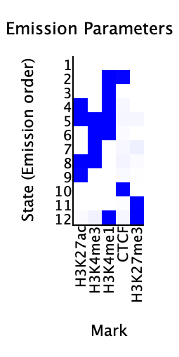
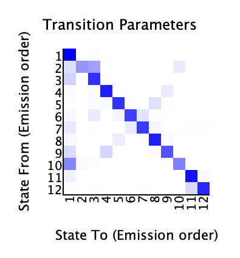
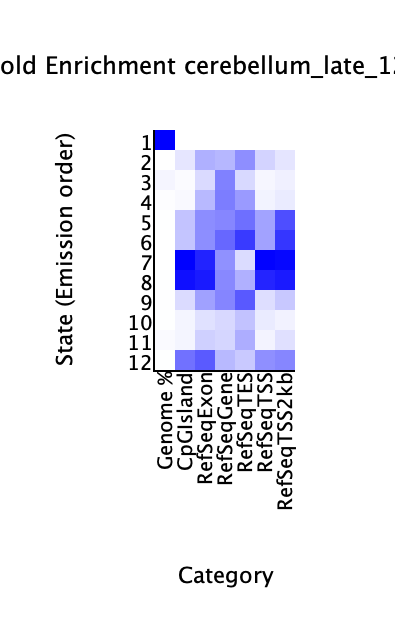
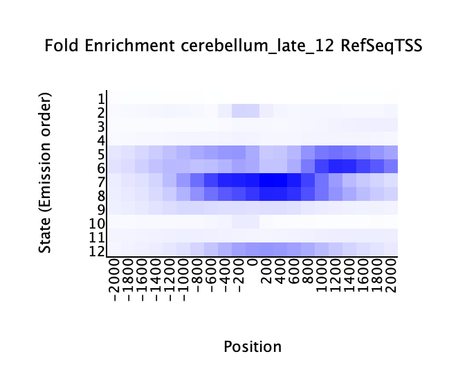
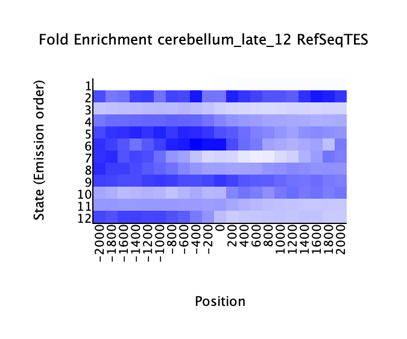

<center><h1>ChromHMM Report</h1></center>
Input Directory: /Users/zakiralibhai/Documents/GitHub/mariner_hi-c/cluster/bap1_late/chromHMM/binarized<br>
Output Directory: /Users/zakiralibhai/Documents/GitHub/mariner_hi-c/cluster/bap1_late/chromHMM/learned_model<br>
Number of States: 12<br>
Assembly: mm10<br>
Full ChromHMM command: LearnModel -p 4 -l /Users/zakiralibhai/Documents/GitHub/mariner_hi-c/cluster/bap1_late/chromHMM/mm10_standard.txt /Users/zakiralibhai/Documents/GitHub/mariner_hi-c/cluster/bap1_late/chromHMM/binarized /Users/zakiralibhai/Documents/GitHub/mariner_hi-c/cluster/bap1_late/chromHMM/learned_model 12 mm10
<h1>Model Parameters</h1>
<br>
<li><a href="emissions_12.svg">Emission Parameter SVG File</a><br>
<li><a href="emissions_12.txt">Emission Parameter Tab-Delimited Text File</a><br>
<br>
<li><a href="transitions_12.svg">Transition Parameter SVG File</a><br>
<li><a href="transitions_12.txt">Transition Parameter Tab-Delimited Text File</a><br><br>
<li><a href="model_12.txt">All Model Parameters Tab-Delimited Text File</a> <br>
<h1>Genome Segmentation Files</h1>
<li><a href="cerebellum_late_12_segments.bed">cerebellum_late_12 Segmentation File (Four Column Bed File)</a><br>
<br>
Custom Tracks for loading into the <a href="http://genome.ucsc.edu">UCSC Genome Browser</a>:<br>
<li><a href=cerebellum_late_12_dense.bed>cerebellum_late_12 Browser Custom Track Dense File</a> <br>
<li><a href=cerebellum_late_12_expanded.bed>cerebellum_late_12 Browser Custom Track Expanded File</a><br>
<h1>State Enrichments</h1>
<h2>cerebellum_late_12 Enrichments</h2>
 <br>
<li><a href="cerebellum_late_12_overlap.svg">cerebellum_late_12 Overlap Enrichment SVG File</a><br>
<li><a href="cerebellum_late_12_overlap.txt">cerebellum_late_12 Overlap Enrichment Tab-Delimited Text File</a><br>
 <br>
<li><a href="cerebellum_late_12_RefSeqTSS_neighborhood.svg">cerebellum_late_12_RefSeqTSS_neighborhood Enrichment SVG File</a><br>
<li><a href="cerebellum_late_12_RefSeqTSS_neighborhood.txt">cerebellum_late_12_RefSeqTSS_neighborhood Enrichment Tab-Delimited Text File</a><br>
 <br>
<li><a href="cerebellum_late_12_RefSeqTES_neighborhood.svg">cerebellum_late_12_RefSeqTES_neighborhood Enrichment SVG File</a><br>
<li><a href="cerebellum_late_12_RefSeqTES_neighborhood.txt">cerebellum_late_12_RefSeqTES_neighborhood Enrichment Tab-Delimited Text File</a><br>
